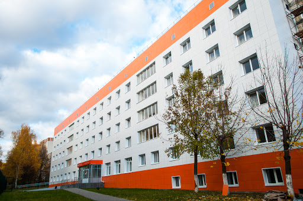

ЗАЩИТА ИНФОРМАЦИИ |
МЦК-ЧЭМК |
 |
|
| Понятие "информационная безопасность" стало актуальным с развитием интернета. Виртуальный мир стал во многом похож на реальный: уже сейчас люди общаются в интернете, читают книги, смотрят фильмы, покупают товары и даже совершают преступления. А если есть киберпреступники, значит, должны быть и специалисты, которые занимаются безопасностью объектов в сети. Это специалисты по информационной безопасности. | Среди средних специальных учебных заведений Чувашии Чебоксарский электромеханический колледж занимает видное место. Созданный в гроздные годы великой Отечественной войны, колледж за время своего существования подготовил более 12,5 тысяч специалистов. В последние годы здесь готовят специалистов по производству, монтажу и наладке электрических аппаратов, эксплуатации электронно-вычислительной техники, маркетингу и менеджменту. |